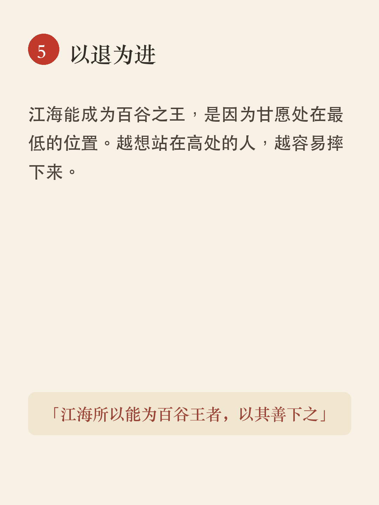

老子 · Quick
7 条 · 洞见4 映照3 · 更新 2026-07-11 23:10
91洞见scene公版你被"定义"了多少次？
🎬 能用语言说出来的道理，就不是永恒的道理——2500年前这句话戳破了人类最大的认知幻觉。


口播稿全文
你有没有想过一个问题——你被“定义”过多少次？
别人说你是内向的，你就把沉默当成了宿命。别人说你是做生意的料，你就把自己活成了一台赚钱机器。别人说你这辈子就这样了，你居然就信了。
2500年前，有一个人对这个问题看得比谁都透。他就是老子，《道德经》的作者。他在开篇第一句话就说：能用语言说出来的道理，就不是永恒的道理。他原文是这么写的——
“道可道，非常道。名可名，非常名。”
这十二个字，戳破了人类最大的一个认知幻觉。
我们以为，语言是通往真实的桥梁。但老子告诉我们，语言恰恰是真实的边界。凡是能被说出来的“名”，都不是那个永恒不变的东西本身。
你想过没有，“无名天地之始，有名万物之母”。当宇宙还没有被命名的时候，一切都是浑然一体的存在。一旦我们开始命名、开始分类、开始贴标签，万物才真正“出生”了。
这个“名”，就是语言的边界，也是思维的牢笼。
你以为你在用概念理解世界，其实你被概念囚禁了。你说一个人是“成功人士”，这三个字就把他简化成了一个标签。他所有的复杂、所有的不确定性，都被这三个字关进了抽屉。
你给自己贴的那些标签呢？“我就是一个普通人”、“我就是学不好数学”、“我就是脾气差”。每一个“就是”，都是你自己铸造的枷锁。
所以老子的智慧不是让我们放弃语言，而是让我们知道语言的边界。他接着说：“故常无欲，以观其妙；常有欲，以观其皦。”
放下定义的冲动，才能看到事物的精微奥妙；带着明确的指向去观察，就只能看到表面的边界。
这不是玄学，这是实打实的认知升级。下一次，当你准备给某件事、某个人下定义的时候，试着停一下。问问自己：我是在描述真实，还是在制造牢笼？
语言是灯塔，但别忘了，灯塔的外面是无限的大海。那些说不出口的，才是你真正要去抵达的地方。
90洞见scene公版最柔软的东西，其实最强
🎬 天下最软的，是水。但打穿最硬的，也是水。老子用这一句话，推翻了你从小到大信的一切。
图卡待生成
口播稿全文
你觉得什么东西最强？
石头？钢铁？金刚石？
错。天下最软的，才是真正的最强。
老子用一句话，推翻了你从小到大信的一切。
“反者道之动，弱者道之用。”道的运动方向，永远朝着对立面走。而“弱”，恰恰是道在发挥作用的方式。
水，天下莫柔弱于水。但打穿最硬的石头、最硬的岩层的，偏偏是它。没有什么能替代它。柔弱能胜刚强，柔软能胜坚硬，这个道理天下没有人不知道——但没有人真正去做到。
人活着的时候身体是柔软的，死了就变得僵硬。草木活着的时候枝叶是脆嫩的，死了就枯萎了。所以坚强属于死亡那一类，柔弱属于生存那一类。强大反而处于下风，柔弱反而占据上风。
这不是心灵鸡汤，这是宇宙运行的底层规律。
石头够硬吧？但它会被水磨平，会被时间风化，会在碰撞中断裂。钢铁够硬吧？但它会生锈，会疲劳，会在最薄弱的环节断裂。越是强硬的东西，越是最先崩溃。
而水呢？它绕过障碍，它渗透缝隙，它永远跟随着道的方向。几百年过去了，石头变小了，水还在流。
你再看那些强硬的人。说话最冲的，最先树敌。做事最硬的，最先折断。越是硬撑的，越撑不住。而那些懂得示弱的人呢？他们像水一样，避开了所有的锋芒，活到了最后。
这不是叫你认输。这是叫你认清规律。
真正的高手从不逞强，因为逞强的人都在道上反向走。真正强大的人不需要证明自己强大，就像水不需要证明自己柔软。
最强的那个人，永远是最后一个倒下的。
89映照scene公版你不会的东西，正在成全你
🎬 难和短、长和高，谁也离不开谁——但今天所有人都在教你怎么补短板，老子却告诉你：你最短的那块板，才是你真正的入口。
图卡待生成
口播稿全文
你知道吗，现在所有人都在教你补短板。
从小到大，你爸妈说，你要均衡发展；上学了，老师说，你偏科可不行；工作了，老板说，你的沟通能力是弱项，得练。木桶理论听过吧？决定你装多少水的，不是最长的那块板，是最短的那块。所以你要把短板补起来。
听起来很有道理。
但老子在两千五百年前的《道德经》第二章里，说了一句完全不一样的话。他说："有无相生，难易相成，长短相较，高下相倾。"
你注意这个"较"字，它不是比较，是较量，是对峙，是说长和短、高和下，它们天生就是一对。你没有短，长就不存在；没有下，高就无从谈起。它们不是谁要消灭谁，而是谁也离不开谁。
这跟今天满屏的"补短板"逻辑，完全相反。
老子接着说，圣人"处无为之事，行不言之教"。什么叫无为？不是什么都不做，是不硬来，不拧着事物的本性做事。
你发现没有，那些真正厉害的人，往往都有明显的短板，但他们根本不在乎。马斯克不善社交，乔布斯脾气差得吓人，爱因斯坦社交能力约等于零。但他们的长板太长了，长到全世界都愿意绕过他们的短处来跟他们合作。
反过来，有些人把所有短板都补成了七十分，结果反而泯然众人了——什么都还行，什么都不拔尖。
老子的逻辑是，长和短不是敌人，是搭档。你真正应该做的，是把你的长板磨到极致，让它成为别人离不开你的理由。你的短板不会消失，但当你的长处足够耀眼的时候，它反而成了你的辨识度。
这就像轮子辐条的例子——三十根辐条，中间必须是空的，没有那个空，轮子根本转不起来。
所以你不需要把每一块板都补齐。你需要做的，是让最长那块板，长到别人够不到的位置。
你不会的东西，正在成全你。
88映照scene公版为什么你越努力越累？
🎬 宇宙最厉害的能力，是什么都不做——天不主管，地不操劳，万物却自动运转了138亿年。


口播稿全文
你有没有想过一个问题——宇宙已经运转了138亿年，太阳东升西落，季节春夏秋冬，万物生老病死，请问，是谁在管？谁在操劳？
没有人管。
天地从来不说话，从来不干预。老子在两千五百年前说过一句话，叫“天地不仁，以万物为刍狗”。刍狗是什么？是用草扎的狗，祭祀时摆上去，祭祀完就扔掉，天地对万物就像对刍狗一样，一视同仁，不偏爱、不干预。结果呢？138亿年，什么都没乱，万物生生不息。
而我们人呢？每天忙得团团转，焦虑、疲惫、无力感像影子一样跟着。你有没有想过，问题可能恰恰出在那个字上——你太“有为”了。
什么叫有为？老子说“损之又损，以至于无为”。你做加法做太多了，做减法才是道。学知识可以越来越多，但修道恰恰是每天往下降，降什么？降那些多余的欲望、那些强撑的意志、那些你觉得“必须由我来做”的执念。
你以为努力就是拼命，拼命就是用力，用力就是抓着不放。但老子在第三章里讲得很清楚——“为无为，则无不治”。真正高明的治理、真正厉害的人做事，用的不是蛮力，是那个“不”。
怎么理解这个“不”？不是什么事都不做，而是不妄为、不强为、不违背规律地乱作为。第五十七章有一句话我特别喜欢——“我无为，而民自化”。当你自己不乱来的时候，事情会自己找到方向。
你发现没有，那些真正高效的人，往往不是最忙的人。他们花很多时间去观察、去等、去找到那个规律在哪里，然后顺着走。就像水流，你非要逆着推一块大石头，累死你也不动，但你顺着水走，它自己就往前滚了。
这就是老子说的“无为而无不为”——当你不再对抗规律，规律就替你干活。
所以你越努力越累，不是因为你不够拼命，而是因为你一直在跟规律拧着来。放下那个“必须由我来”的念头，少一点焦虑，多一点观察，找到规律，顺水推舟，这才是真正聪明的人做事的方式。
86映照scene公版及时止损，是最强的本事
🎬 fame和body哪个重要？钱和命哪个值得？老子在2500年前就算清了这笔账，答案让所有人沉默。


口播稿全文
你知道吗，老子早在2500年前就算清了一道选择题——名气重要还是身体重要？钱重要还是命重要？答案说出来可能让你沉默。
《道德经》第四十四章，原文就这几句，但每一个字都像刀子：名与身孰亲？身与货孰多？得与亡孰病？
这三个问题，老子替所有人问了一遍。名声和身体哪个更亲近？身体和钱哪个更值得？得到了和失去了哪个更让你难受？
但老子不是在让你做选择题。他紧接着说了一句扎心的：是故甚爱必大费，多藏必厚亡。越是你死死攥着不肯放的东西，最后消耗你越狠。藏得越多，失去的时候痛得越深。
这话放到今天照样刺耳。我们多少人，为了一份体面熬垮了身体；为了一套房子搭进去半辈子；为了一个位置把自己逼到焦虑症发作。舍不得放，舍不得停，结果呢？
老子的答案其实很简单，就八个字：知足不辱，知止不殆。懂得知足，就不会被欲望羞辱。懂得知止，就不会被贪婪拖垮。这样的人，才能真正长久。
你看，这就是老子画的那条线——不是让你不努力，而是让你知道什么时候该踩刹车。
人生最难的从来不是往前冲，而是知道什么时候该停下来。多少人在名利场上跑了几十年，跑着跑着发现——身体垮了，家没了，快乐也没了。贪心让你跑得很快，但只有知止才能让你跑得远。
老子说的长久，不是寿命的长，是状态的长，是内心安定的长。
所以，及时止损，不是懦弱，是清醒；不是放弃，是智慧。适可而止不是不思进取，是知道边界在哪里，才能真正抵达你想去的地方。
贪心让你到达不了终点，适可而止才能长久。
85洞见scene公版放下，才能接住
🎬 老子说，最厉害的圣人，不占有任何东西——结果反而什么都少不了。你拼命抓的，正在让你失去。




口播稿全文
你想抓住的东西，正在让你失去。
老子在2500年前说过一句话，让无数人颠覆认知——"上善若水，水善利萬物而不爭。"最厉害的人，就像水一样，滋养万物但不争抢。
你以为这是在教你大度？
错了。
老子不是在劝你善良，他是在告诉你一个冷酷的自然法则：你越拼命抓，越抓不住；你越不在乎，反而越能留住。
为什么？
第七章说，天地之所以能永恒存在，是因为它不为自己而活。圣人把自己放在后面，反而站在前面；把自己置之度外，反而保全了自己。
你可能会说，这是PUA吧？
但老子不是在讲道德，他是在讲逻辑。第二章说："功成而弗居。夫唯弗居，是以不去。"做成但不占有，反而永远有你的份。
这就是核心：不争，不是躺平。躺平是什么都不做，而不争是"为"但不"占有"。你努力，但你放下对结果的执念。就像第十章说的——"生而不有，為而不恃，長而不宰"。创造但不占有，付出但不当成依赖，引领但不确定，这样你反而长久。
第六十六章说："江海所以能為百谷王者，以其善下之。"江海能成为百谷之王，是因为它们甘愿处在最低的位置。
越是想站在高处的人，越容易摔下来。
这就是老子的智慧：最厉害的活法，是以退为进。你不争，天下反而没人能跟你争。
还在紧抓不放吗？放下来试试。
82洞见scene公版宇宙从不偏心，这才是公平
🎬 天道就像一张网，眼子很大，但没有任何东西能逃出去——你以为的"不公平"，可能只是你看不见的账本。


口播稿全文
你以为这世界不公平对吧？有人坏事做尽却风光无限，有人善良本分却处处碰壁。但《道德经》第七十三章甩给你一句话，你品，你细品——
“天网恢恢，疏而不失。”
你以为这是鸡汤，是安慰剂，是弱者意淫出来的精神胜利法？错了。老子是个看透了天道运转的人，他说的不是因果报应，不是迷信，他说的，是宇宙运行的底层逻辑。
什么叫天网恢恢？这网有多大？眼子有多大？大到你根本看不见边际。但关键是下一句——疏而不失。眼子很大，但没有任何东西能逃出去。
这不是说老天爷天天盯着你，不是那种小眼睛监视器式的公平。这是说，当你把时间线拉长，把视野拉大，你会发现——天道从不偏心，它只是不着急。
第五章里老子说过一句话很多人误解了：“天地不仁，以万物为刍狗。”你以为这是说天地冷酷、残忍？不是。他的意思是——天地对万物一视同仁，没有谁特殊，没有谁被照顾，也没有谁被亏待。刍狗是什么？祭祀用的草扎的狗，用的时候恭恭敬敬，用完了扔掉。天地对万物的态度就是这样——该怎样就怎样，不多一分，不少一毫。
第七十七章又说了：“天之道，损有余而补不足。”天道天然在做一件事，把多余的削掉，把不足的补上。人之道呢？“损不足以奉有余”——人干的事刚好相反，穷的更穷，富的更富。
所以你以为的不公平是什么？是你站在人的时间尺度上，用人的短视标准去评判天道的账本。你今天看到坏人得意，那是他有余的部分还没被削；你今天看到好人受苦，那是他的不足还没被补上。天道只是还没动，不是不动。
第七十九章还有一句：“天道无亲，常与善人。”天不偏向谁，但它永远站在符合道的那一边。注意，不是善良的人，是符合道的人。你得先懂这个“道”是什么，你得先知道什么是对的，然后你去做，天道才会跟你站在一边。不是你哭天抢地它就可怜你，不是你委屈愤怒它就为你出头。
那“天之道，不争而善胜，不言而善应，不召而自来，繟然而善谋”这句话什么意思？天道从来不跟你争，但它最后总是赢的；它什么都不说，但万物自然回应它；它不召唤谁，但一切都会归向它；它宽缓从容，但它的计划比谁都周密。
这才是真正的公平。不是你想象中的那种——我想怎样就怎样，上天就得给我安排。它是一种超越你短期视角、超越你个人得失的、更大的公平。你今天受的苦，可能是在还你之前欠下的债；你今天享的福，可能是在预支你未来的账。天网恢恢，疏而不失——眼子很大，大到你看不见，大到你以为漏了，但最后谁也跑不掉。
所以别急。把时间拉长，把视野放大，你就知道——宇宙从不偏心，这才是真正的公平。
书语 · Quick 短视频评审 · 内部 · noindex